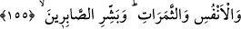

cismânî demek arasında hiçbir fark yoktur. Yalnız ona beden dediğimiz kesîf cisme âid
mânâsında “cismânî” diyemeyiz. Zira bu tarz bedenî-cismânî bir nimetlenme sadece
dünyâda mümkündür.
Peygamberimiz (s.a.)’e: “Ya Rasûlallah, şehîdlerle beraber herhangi bir kimse
haşrolunacak mıdır?” diye sorulunca O (s.a.): “Evet, her gün yirmi kez ölümü
hatırlayan kimse onlarla haşrolunacaktır.” buyurmuştur.
et-Te’vîlâtü’n-Necmiyye’de şöyle gelmiştir: Siz Allah’da fânî olmak arzusuyla O’nun
yolunda “büyük cihâd” yaparken, yine O’nun celâl kılıcıyla öldürülen kimseleri ölüler
sanmayınız. Her ne kadar maddî varlıkları fânî olmuşsa da onlar, kendilerini yaratanı
müşâhede ile dirilik kazanmışlardır. Allah için fânî olanlar, O’nun ile bâkî olurlar.
Allah Teâlâ bazen onları, celâl sıfatının şiddetli tecellîleriyle yok eder. Bazen cemâl
sıfatının tatlı nefhalarıyla diriltir. Onlar cemâl bahçelerinde gezinip dururlar. Fakat siz
onların bu hâllerini göremez, anlayamazsınız.
Kuşeyrî, şöyle demiştir: “Bedenleri Allah yolunda fânî olanların ruhları muhakkak
Allah ile bâkî olur.”
Cüneyd Bağdâdî, şöyle demiştir: Nefsinin arzularına göre yaşayan, rûhunun
bedenden ayrılmasıyla ölür. Rabbının isteğine uygun olarak hayat süren ise, geçici
dünyâ hayatından bâkî olan hakîkî hayata kavuşur.
Mesnevî’de şöyle gelmiştir:
İyi doktor, kötü dişi yerinden çıkarır.
Tâ ki o sevgiliyi derd ve hastalıklarından kurtarsın.
Dişler noksanlaşır ama, ağrılar azalır.
Elbette şehidler, makâm-ı fenâda diridirler.
Başın bedenden ayrılmasına râzı olan şehîd:
Zaman içinde onun yerine, yüzbin baş kazanır.
Allah yolunda kesilmiş boyun, şehâdet şerbeti içer.
Fakat bu şerbeti ancak “Belâ” diyen boğaz içebilir.
155. Andolsun ki sizi biraz korku ve açlık; mallardan, canlardan ve ürünlerden
biraz azaltma (fakirlik) ile deneriz. (Ey Peygamber!) Sabredenleri müjdele!
Vallahi size imtihan edici biri gibi davranarak, belâya sabredip kazâlara rızâ gösterip
göstermeyeceğinizi tesbit edeceğiz. Çünkü belâ, mihenk taşı gibi, nefislerin kıymetini
belirleyen bir miyardır. Fakat biz bunu, bilmediğimiz bir şeyi öğrenmek için değil,
hanginizin itâatkâr ve hanginizin âsî olduğunu size göstermek için yapacağız.
Sizi biraz düşman korkusuyla, biraz kıtlık ve yokluk içinde aç bırakmakla, hırsızlık,